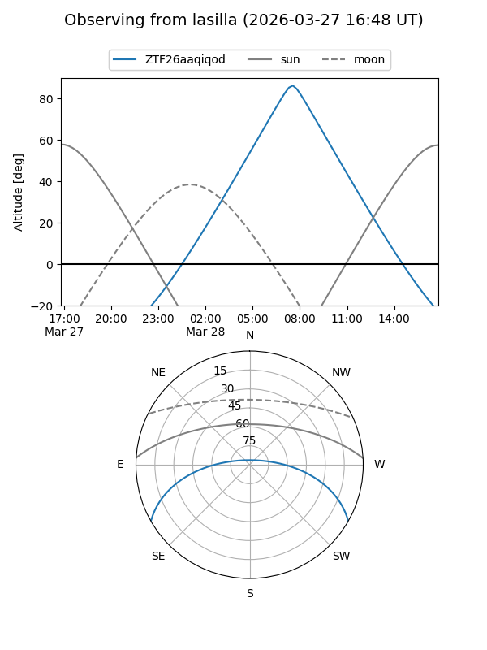
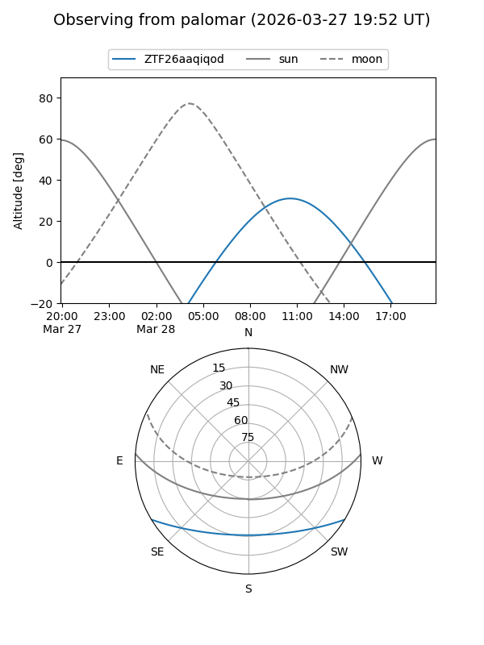

ZTF26aaqiqod
Target ZTF26aaqiqod at 2026-03-27 13:20
Aliases and brokers:
FINK: link
Lasair: link
ALeRCE: link
alt names
ZTF26aaqiqod (ztf,fink_ztf)
Coordinates:
equatorial (ra, dec) = 227.3469,-25.53111
equatorial (HMS+DMS) = 15:09:23.26,-25:31:51.99
galactic (l, b) = (338.1903,+27.73683)
Flags:
Photometry:
last ztfg=17.60
1 ztfg detections
Lightcurve
Visibility


Additional plots